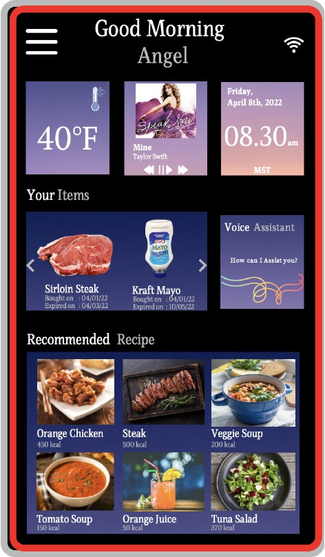

Fridge Interface UX Case Study
Overview
This is a team design project about solving problems that are bothering people when they use a fridge. Through research, My teammate and I found out that most of our testers had experienced forgetting things when they bought the food and got the food rotten in the refrigerator. Based on the findings, we then performed user personas, journey maps, and several different research methods to specify the issue and test our design outcome. The recommendations we proposed is to install a touch screen on the fridge with a food expire alert system which asks users to scan or enter the expiration date before they put things in the fridge. We then built a prototype based on the result we have, leading to a design which will remind users by sending an alert once the food is close to the expiration date.
Reasearch Plan
Since performing usability tests helps the designers as well as the developers to uncover issues within their product as well as discovering new opportunities to revamp, we decided to include two tests in our research, survey and In-person scenario testing.
- Survey
- In-person scenario testing
We created a survey form in Google Form and invited 10 people to fill in the survey. The survey consisted of two sections, the demographic and behavior toward the fridge section.
2. What is your highest level of education?
3. Where are you originally from? （Countries）
2. Which feature do you use more often to store food, the refrigerator or the freezer?
3. How often do you toss out food that has expired?
4. What brand of refrigerator do you use at home?
5. How long have you been using this type of refrigerator?
6. What is the quality of the refrigerator?
7. Has it ever had any issues throughout the time you have been using it?
8. Do you use the water filter on the refrigerator?
9. How many times do you forget to close the refrigerator’s door?
10. What is the storage space like in your refrigerator?
11. What is the feature in your refrigerator that you like the most / most important to you?
12. How many refrigerators do you have at home?
13. If there is any feature that you think needs to be improved? What would it be?
Task 1:
You need to put a carton of milk and cheese into the refrigerator. Show me where you would place these items inside the refrigerator. Why did you choose this location?
Task 2:
You bought several items out of the freezer aisle, one being a frozen pre-made pizza. Show me where you would place this item in your refrigerator. Why did you choose this location?
Task 3:
You bought apples but notice that you have two apples that are not quite expired from the previous week. Tell me where you would place the old and new apples. (The idea here is to see how they might arrange the expired apples and if they have a method).
Task 4:
You notice that there are several condiments past their expiration date in your refrigerator, what do you do next? (go through all items in the refrigerator, condiments only, or keep them as is)
Research Results
Based on the interview as well as the observation that we did, it seems like all of our participants have experienced the same problem: forgetting when they bought the food and got the food rotten in the refrigerator. In addition, we also noticed that there are several minor problems:
- The inconsistent temperature that affect ice maker and food quality
- Forget the food or the expiry date and they had to toss out the expired or rotten food
- Forget to close the refrigerator door
Suggestions
Based on the issues that the participants have experienced with their refrigerator, as well as the features that they dislike, here are the improvements that we could suggest:
- Add a signifier to the refrigerator (whether it is a sensor, digital notes or notification system) that will give a sign to the users if the temperature is not right or if they forget to close the door. Signifiers are an important aspect whether in a digital product or electronic appliances as it helps the product to communicate with the users.
User Personas
By introducing user personas in the research, we figurative the potential clients and thus help us go deeper into understanding users’ background, behavior, goal as well as frustration that they experience while interacting with the product.
Task Analysis
In order to find out what interactions between users and the fridge lead to food getting rotten in the fridge, we chose to do Perception, Cognition and Action (PCA) methodology to analyze it. By asking testers to rearrange food or condiments based on the expiration date, we were hoping to identify errors that users could possibly make.
- The main goal of the PCA task
- Sub tasks 1. Open the fridge door
Rearrange expired food from least expired to most expired to the back.
2. Pick them out
3. Find the expiration label
4. Sort them out
5. Put them back in the fridge
Design Solution
Interface
This is the interface of the screen we proposed to install on the fridge door. To enhance convenience, we designed functions such as a section allowing users to see what they store in the fridge with the expiration date on the bottom of each item. In addition, users can look up recipes on the screen whenever they need some guidance. The interface also comes with a music playing function, which you can use it as a speaker in the kitchen.
The expiration date scanning system
Since the main purpose of this design is to solve the problem of forgetting food in the fridge, we came up with a design that asked users to scan the information before putting groceries in their fridge. Users can also put some notes if they have additional notice to remind themselves.
The Alarm System
The Food Alarm: The two images show how the alarm system works. If an item is close to its expiry date, the item image will be surrounded by a red frame. When it gets even more closer to the expiry date, a pop-out window will appear to remind the users.
The Door Alarm: Through our research we found out that some people have been dealing with not closing the door properly, thus wasting electricity and enhancing the probability of getting rotten food. To solve this problem, we add an alarm to the door as well.

